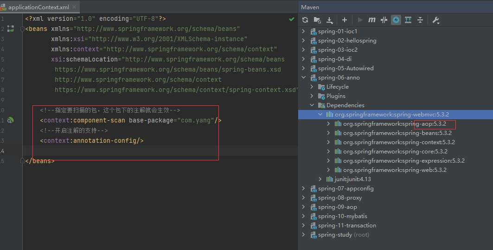
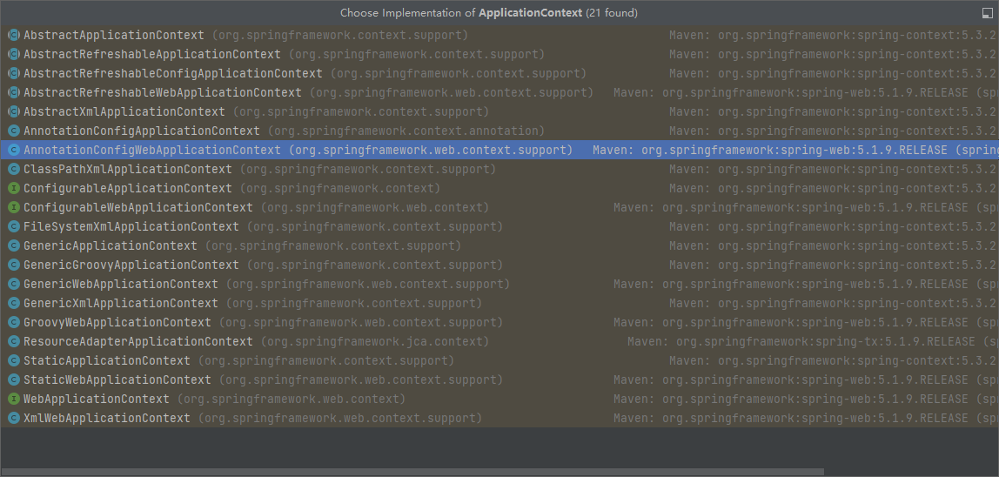

Spring IOC 1. IOC本质 控制反转IoC(Inversion of Control)，是一种设计思想，DI(依赖注入)是实现IoC的一种方法，也有人认为DI只是IoC的另一种说法。没有IoC的程序中 , 我们使用面向对象编程 , 对象的创建与对象间的依赖关系完全硬编码在程序中，对象的创建由程序自己控制，控制反转后将对象的创建转移给第三方，个人认为所谓控制反转就是：获得依赖对象的方式反转了。
控制反转是一种通过描述（XML或注解）并通过第三方去生产或获取特定对象的方式。在Spring中实现控制反转的是IoC容器，其实现方法是依赖注入（Dependency Injection,DI）
采用XML方式配置Bean的时候，Bean的定义信息是和实现分离的，而采用注解的方式可以把两者合为一体，Bean的定义信息直接以注解的形式定义在实现类中，从而达到了零配置的目的。
2. Spring的xxx.xml文件的基本配置 1 2 3 4 5 6 <?xml version="1.0" encoding="UTF-8" ?> <beans xmlns ="http://www.springframework.org/schema/beans" xmlns:xsi ="http://www.w3.org/2001/XMLSchema-instance" xsi:schemaLocation ="http://www.springframework.org/schema/beans https://www.springframework.org/schema/beans/spring-beans.xsd" ></beans >
3. Spring Demo 注 : spring 需要导入commons-logging进行日志记录 . 我们利用maven , 他会自动下载对应的依赖项
1 2 3 4 5 <dependency > <groupId > org.springframework</groupId > <artifactId > spring-webmvc</artifactId > <version > 5.3.2</version > </dependency >
3.1 编写一个Hello实体类 1 2 3 4 5 6 7 8 9 10 11 12 13 14 15 16 17 18 19 20 21 22 23 24 25 26 27 28 29 30 package com.yang.pojo;public class Hello { private String str; private String name; public String getName () { return name; } public void setName (String name) { this .name = name; } public String getStr () { return str; } public void setStr (String str) { this .str = str; } @Override public String toString () { return "Hello{" + "str='" + str + '\'' + ", name='" + name + '\'' + '}' ; } }
3.2 编写我们的spring文件（容器） , 这里我们命名为beans.xml,并将类注册到此容器中 1 2 3 4 5 6 7 8 9 10 11 12 13 14 15 16 17 <?xml version="1.0" encoding="UTF-8" ?> <beans xmlns ="http://www.springframework.org/schema/beans" xmlns:xsi ="http://www.w3.org/2001/XMLSchema-instance" xsi:schemaLocation ="http://www.springframework.org/schema/beans https://www.springframework.org/schema/beans/spring-beans.xsd" > <bean id ="hello" class ="com.yang.pojo.Hello" > <property name ="str" value ="Spring" /> <property name ="name" value ="明星" /> </bean > </beans >
3.3 测试 1 2 3 4 5 6 7 8 9 10 11 12 13 import com.yang.pojo.Hello;import org.springframework.context.ApplicationContext;import org.springframework.context.support.ClassPathXmlApplicationContext;public class MyTest { public static void main (String[] args) { ApplicationContext context = new ClassPathXmlApplicationContext ("beans.xml" ); Hello hello = (Hello) context.getBean("hello" ); System.out.println(hello.toString()); } }
1 Hello{str='Spring' , name='明星' }
3.4 思考 Hello 对象是谁创建的 ? 【hello 对象是由Spring创建的
Hello 对象的属性是怎么设置的 ? hello 对象的属性是由Spring容器设置的
这个过程就叫控制反转 :
1 2 3 4 控制 : 谁来控制对象的创建 , 传统应用程序的对象是由程序本身控制创建的 , 使用Spring后 , 对象是由Spring来创建的(bean) 反转 : 程序本身不创建对象 , 而变成被动的接收对象 : Hello hello = (Hello) context.getBean("hello");
这个案例依赖注入 : 就是利用set方法来进行注入的：
1 2 3 4 5 6 public void setName(String name) { this.name = name; } public void setStr(String str) { this.str = str; }
3.5 引用（注入）Spring容器中创建好的对象 1 2 3 4 5 6 7 <bean id="mysqlImpl" class="com.yang.dao.UserDaoMysqlImpl"/> <bean id="userDaoImpl" class="com.yang.dao.UserDaoImpl"/> <bean id="userServiceImpl" class="com.yang.service.UserServiceImpl"> <property name="userDao" ref="mysqlImpl"/> </bean> <!--ref:引用Spring容器中创建好的对象 value:具体的值，基本数据类型-->
4 IOC创建对象的方式 4.1 方式一：通过无参构造方法来创建（默认） 1 2 3 <bean id ="user" class ="com.kuang.pojo.User" > <property name ="name" value ="shen" /> </bean >
4.2 方式二：通过有参构造方法来创建 1 2 3 4 5 6 7 8 9 10 11 12 13 14 <bean id ="user" class ="com.yang.pojo.User" > <constructor-arg index ="0" value ="同宇" /> </bean > <bean id ="user" class ="com.yang.pojo.User" > <constructor-arg type ="java.lang.String" value ="哈哈" /> </bean > <bean id ="user" class ="com.yang.pojo.User" > <constructor-arg name ="name" value ="信息" /> </bean >
在配置文件加载的时候。其中管理的对象都已经初始化了！
1 ApplicationContext context = new ClassPathXmlApplicationContext ("beans.xml" );
5 Spring的配置 5.1 别名 1 2 3 4 5 6 7 8 9 <bean id ="user" class ="com.yang.pojo.User" > <property name ="name" value ="2" /> </bean > <alias name ="user" alias ="userNew" /> ClassPathXmlApplicationContext context = new ClassPathXmlApplicationContext("applicationContext.xml"); //下面两句结果一样 User user = (User) context.getBean("user"); User user = (User) context.getBean("userNew");
5.2 Bean的配置 bean就是java对象,由Spring创建和管理
1 2 3 4 5 6 7 8 9 10 11 12 13 <bean id ="hello" name ="hello2 h2,h3;h4" class ="com.yang.pojo.Hello" > <property name ="name" value ="Spring" /> </bean >
5.3 import 团队的合作通过import来实现 :将不同spring配置文件（容器）集合在一个容器中
1 <import resource ="{path}/beans.xml" />
6 依赖注入（DI）
6.1 构造器注入（见4.2 通过有参构造方法来创建） 6.2 set注入 (1) 环境准备
1 2 3 4 5 6 7 8 9 10 11 12 13 14 15 16 17 18 19 20 21 22 23 24 25 26 27 28 29 30 31 32 33 34 35 36 37 38 39 40 41 42 43 44 45 46 47 48 49 50 51 52 53 54 55 56 57 58 59 60 61 62 63 64 65 66 67 68 69 70 71 72 73 74 75 76 77 78 79 80 81 82 83 84 85 86 87 88 89 90 91 92 93 94 95 96 97 98 99 100 101 102 103 104 105 106 107 108 109 110 111 112 package com.yang.pojo;public class Address { private String address; public String getAddress () { return address; } public void setAddress (String address) { this .address = address; } @Override public String toString () { return "Address{" + "address='" + address + '\'' + '}' ; } } package com.yang.pojo;import java.util.*;public class Student { private String name; private Address address; private String[] books; private List<String> hobbys; private Map<String,String> card; private Set<String> games; private String wife; private Properties info; public String getName () { return name; } public void setName (String name) { this .name = name; } public Address getAddress () { return address; } public void setAddress (Address address) { this .address = address; } public String[] getBooks() { return books; } public void setBooks (String[] books) { this .books = books; } public List<String> getHobbys () { return hobbys; } public void setHobbys (List<String> hobbys) { this .hobbys = hobbys; } public Map<String, String> getCard () { return card; } public void setCard (Map<String, String> card) { this .card = card; } public Set<String> getGames () { return games; } public void setGames (Set<String> games) { this .games = games; } public String getWife () { return wife; } public void setWife (String wife) { this .wife = wife; } public Properties getInfo () { return info; } public void setInfo (Properties info) { this .info = info; } @Override public String toString () { return "Student{" + "name='" + name + '\'' + ", address=" + address + ", books=" + Arrays.toString(books) + ", hobbys=" + hobbys + ", card=" + card + ", games=" + games + ", wife='" + wife + '\'' + ", info=" + info + '}' ; } }
(2) 注入
1 2 3 4 5 6 7 8 9 10 11 12 13 14 15 16 17 18 19 20 21 22 23 24 25 26 27 28 29 30 31 32 33 34 35 36 37 38 39 40 41 42 43 44 45 46 47 48 49 50 51 52 53 54 55 56 57 58 59 <?xml version="1.0" encoding="UTF-8" ?> <beans xmlns ="http://www.springframework.org/schema/beans" xmlns:xsi ="http://www.w3.org/2001/XMLSchema-instance" xsi:schemaLocation ="http://www.springframework.org/schema/beans https://www.springframework.org/schema/beans/spring-beans.xsd" > <bean id ="address" class ="com.yang.pojo.Address" > <property name ="address" value ="浙江" /> </bean > <bean id ="student" class ="com.yang.pojo.Student" > <property name ="name" value ="路明星" /> <property name ="address" ref ="address" /> <property name ="books" > <array > <value > 三国演义</value > <value > 西游记</value > <value > 水浒传</value > <value > 红楼梦</value > </array > </property > <property name ="hobbys" > <list > <value > 打游戏</value > <value > 跳舞</value > <value > 唱歌</value > </list > </property > <property name ="card" > <map > <entry key ="身份证" value ="12345" /> <entry key ="银行卡" value ="888888" /> </map > </property > <property name ="games" > <set > <value > lol</value > <value > coc</value > <value > bob</value > </set > </property > <property name ="wife" > <null /> </property > <property name ="info" > <props > <prop key ="password" > 123456</prop > <prop key ="url" > 男</prop > <prop key ="driver" > 一班</prop > </props > </property > </bean > </beans >
6.3 p命名和c命名注入 (1) 环境准备
1 2 3 4 5 6 7 8 9 10 11 12 13 14 15 16 17 18 19 20 21 22 23 24 25 26 27 28 29 30 31 32 33 34 35 36 37 38 package com.yang.pojo;public class User { private String name; private int age; public User () { } public User (String name, int age) { this .name = name; this .age = age; } public String getName () { return name; } public void setName (String name) { this .name = name; } public int getAge () { return age; } public void setAge (int age) { this .age = age; } @Override public String toString () { return "User{" + "name='" + name + '\'' + ", age=" + age + '}' ; } }
(2) 注入
1 2 3 4 5 6 7 8 9 10 11 12 <?xml version="1.0" encoding="UTF-8" ?> <beans xmlns ="http://www.springframework.org/schema/beans" xmlns:xsi ="http://www.w3.org/2001/XMLSchema-instance" xmlns:p ="http://www.springframework.org/schema/p" xmlns:c ="http://www.springframework.org/schema/c" xsi:schemaLocation ="http://www.springframework.org/schema/beans https://www.springframework.org/schema/beans/spring-beans.xsd" > <bean id ="user" class ="com.yang.pojo.User" p:name ="同宇" p:age ="22" /> <bean id ="user2" class ="com.yang.pojo.User" c:age ="22" c:name ="大王" scope ="prototype" /> </beans >
7 Bean的作用域（scope） 在Spring中，那些组成应用程序的主体及由Spring IoC容器所管理的对象，被称之为bean。简单地讲，bean就是由IoC容器初始化、装配及管理的对象
例如：
1 2 <bean id ="ServiceImpl" class ="com.yang.service.ServiceImpl" scope ="singleton" > <bean id ="user" class ="com.yang.pojo.User" c:age ="22" c:name ="大王" scope ="prototype" />
默认是单例模式
8 Bean的自动装配 自动装配是使用spring满足bean依赖的一种方法
spring会在应用上下文中为某个bean寻找其依赖的bean。
Spring中bean有三种装配机制，分别是：
在xml中显式配置:原始方式
在java中显式配置：javaConfig
隐式的bean发现机制和自动装配
Spring的自动装配需要从两个角度来实现，或者说是两个操作：
组件扫描(component scanning)：spring会自动发现应用上下文中所创建的bean
自动装配(autowiring)：spring自动满足bean之间的依赖，也就是我们说的IoC/DI
8.1 测试环境搭建 1、新建一个项目
2、新建两个实体类，Cat Dog 都有一个叫的方法
1 2 3 4 5 6 7 8 9 10 public class Cat { public void shout () { System.out.println("miao~" ); } } public class Dog { public void shout () { System.out.println("wang~" ); } }
3、新建一个用户类 User
1 2 3 4 5 public class User { private Cat cat; private Dog dog; private String str; }
4、编写Spring配置文件
1 2 3 4 5 6 7 8 9 10 11 12 13 14 15 <?xml version="1.0" encoding="UTF-8" ?> <beans xmlns ="http://www.springframework.org/schema/beans" xmlns:xsi ="http://www.w3.org/2001/XMLSchema-instance" xsi:schemaLocation ="http://www.springframework.org/schema/beans http://www.springframework.org/schema/beans/spring-beans.xsd" > <bean id ="dog" class ="com.yang.pojo.Dog" /> <bean id ="cat" class ="com.yang.pojo.Cat" /> <bean id ="user" class ="com.kuang.pojo.User" > <property name ="cat" ref ="cat" /> <property name ="dog" ref ="dog" /> <property name ="str" value ="yang" /> </bean > </beans >
5、测试
1 2 3 4 5 6 7 8 9 public class MyTest { @Test public void testMethodAutowire () { ApplicationContext context = new ClassPathXmlApplicationContext ("beans.xml" ); User user = (User) context.getBean("user" ); user.getCat().shout(); user.getDog().shout(); } }
8.2 byName autowire byName (按名称自动装配)
1 2 3 <bean id ="people" class ="com.yang.pojo.People" autowire ="byName" > <property name ="name" value ="同宇" /> </bean >
小结
当一个bean节点带有 autowire byName的属性时，将查找其类中所有的set方法名，例如setCat，获得将set去掉并且首字母小写的字符串，即cat；去spring容器中寻找是否有此字符串名称id的对象；如果有，就取出注入；如果没有，就报空指针异常。
8.3 byType autowire byType (按类型自动装配)
使用autowire byType首先需要保证：同一类型的对象，在spring容器中唯一。如果不唯一，会报不唯一的异常。
1 2 3 4 5 NoUniqueBeanDefinitionException <bean id ="people" class ="com.yang.pojo.People" autowire ="byType" > <property name ="name" value ="同宇" /> </bean >
9 注解版自动装配 9.1 开启注解支持 1 2 3 4 5 6 7 8 9 10 11 12 <?xml version="1.0" encoding="UTF-8" ?> <beans xmlns ="http://www.springframework.org/schema/beans" xmlns:xsi ="http://www.w3.org/2001/XMLSchema-instance" xmlns:context ="http://www.springframework.org/schema/context" xsi:schemaLocation ="http://www.springframework.org/schema/beans https://www.springframework.org/schema/beans/spring-beans.xsd http://www.springframework.org/schema/context https://www.springframework.org/schema/context/spring-context.xsd" > <context:annotation-config /> </bean >
1、在spring配置文件中引入context文件头
1 2 3 xmlns:context="http://www.springframework.org/schema/context" http://www.springframework.org/schema/context http://www.springframework.org/schema/context/spring-context.xsd
2、开启属性注解支持！
1 <context:annotation-config />
9.2 注解一：@Autowired 9.3 注解二：@Resource 9.4 小结 @Autowired与@Resource异同：
1、@Autowired与@Resource都可以用来装配bean。都可以写在字段上，或写在set方法上。
2、@Autowired默认按类型装配（属于spring规范），默认情况下必须要求依赖对象必须存在，如果要允许null 值，可以设置它的required属性为false，如：@Autowired(required=false) ，如果我们想使用名称装配可以结合@Qualifier注解进行使用
1 2 <bean id ="dog1" class ="com.yang.pojo.Dog" /> <bean id ="dog2" class ="com.yang.pojo.Dog" />
1 2 3 @Autowired @Qualifier("dog1") private Dog dog;
3、@Resource（属于JavaEE），默认按照名称进行装配，名称可以通过name属性进行指定。如果没有指定name属性，当注解写在字段上时，默认取字段名进行按照名称查找，如果注解写在setter方法上默认取属性名进行装配。当找不到与名称匹配的bean时才按照类型进行装配。但是需要注意的是，如果name属性一旦指定，就只会按照名称进行装配。
1 2 @Resource(name = "dog1") private Dog dog;
它们的作用相同都是用注解方式注入对象，但执行顺序不同。@Autowired先byType，@Resource先byName。
10 注解开发 在spring4之后，要使用注解开发，必须保障aop包的导入

10.1 在配置文件当中，还得要引入一个context约束 1 2 3 4 5 6 7 8 9 <?xml version="1.0" encoding="UTF-8" ?> <beans xmlns ="http://www.springframework.org/schema/beans" xmlns:xsi ="http://www.w3.org/2001/XMLSchema-instance" xmlns:context ="http://www.springframework.org/schema/context" xsi:schemaLocation ="http://www.springframework.org/schema/beans http://www.springframework.org/schema/beans/spring-beans.xsd http://www.springframework.org/schema/context http://www.springframework.org/schema/context/spring-context.xsd" > <context:component-scan base-package ="com.yang" /> <context:annotation-config /> </beans >
10.2 在需要spring托管的类上加注解 1 2 3 4 5 6 7 8 9 10 11 12 13 14 15 package com.yang.pojo;import org.springframework.beans.factory.annotation.Value;import org.springframework.context.annotation.Scope;import org.springframework.stereotype.Component;@Component @Scope("prototype") public class User { public String name; public void setName (String name) { this .name = name; } }
属性注入
(1) 可以不用提供set方法，直接在直接名上添加@value(“值”)
1 2 3 @Value("王者荣耀") public String name;
(2) 如果提供了set方法，在set方法上添加@value(“值”)
1 2 3 4 5 6 public String name;@Value("王者荣耀") public void setName (String name) { this .name = name; }
@Component三个衍生注解
为了更好的进行分层，Spring可以使用其它三个注解，功能一样，目前使用哪一个功能都一样
@Controller：web层
@Service：service层
@Repository：dao层
写上这些注解，就相当于将这个类交给Spring管理装配了！
10.3 小结 XML与注解比较
1 2 3 XML可以适用任何场景 ，结构清晰，维护方便 注解不是自己提供的类使用不了，开发简单方便
10.4 xml与注解整合开发 ：推荐最佳实践 1 2 3 4 5 6 7 xml管理Bean 注解完成属性注入 使用过程中， 可以不用扫描，扫描是为了类上的注解 <context:annotation-config />
作用：
1 2 3 4 5 6 7 进行注解驱动注册，从而使注解生效 用于激活那些已经在spring容器里注册过的bean上面的注解，也就是显示的向Spring注册（注解自动装配bean） 如果不扫描包，就需要手动配置bean 如果不加注解驱动，则注入的值为null ！
11 基于Java类进行配置 
1 2 3 4 5 6 7 8 9 10 11 12 13 14 15 16 17 18 19 20 21 22 23 24 25 26 27 package com.yang.config;import com.yang.pojo.User;import com.yang.pojo.User2;import org.springframework.context.annotation.Bean;import org.springframework.context.annotation.ComponentScan;import org.springframework.context.annotation.Configuration;import org.springframework.context.annotation.Import;@Configuration @ComponentScan("com.yang.pojo") @Import(yangConfig2.class) public class yangConfig { @Bean public User getUser () { return new User (); } @Bean public User2 getUser2 () { return new User2 (); } }
1 2 3 4 5 6 7 8 9 10 11 12 13 14 15 16 17 import com.yang.config.yangConfig;import com.yang.pojo.User;import com.yang.pojo.User2;import org.springframework.context.ApplicationContext;import org.springframework.context.annotation.AnnotationConfigApplicationContext;public class MyTest { public static void main (String[] args) { ApplicationContext context=new AnnotationConfigApplicationContext (yangConfig .class); User getUser = context.getBean("getUser" , User.class); User2 getUser2 = context.getBean("getUser2" , User2.class); System.out.println(getUser.getName()); System.out.println("=====================" ); System.out.println(getUser2.getName()); } }